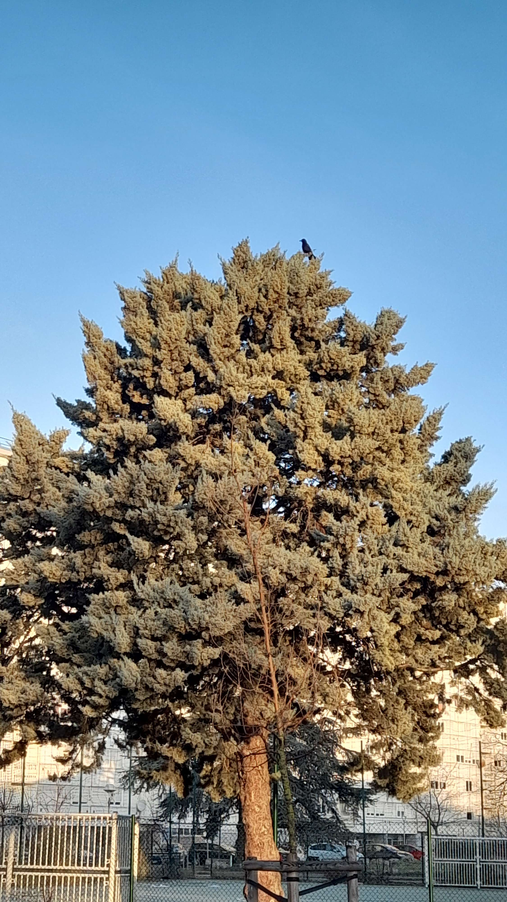

Un arbre imposant
Depuis que je suis toute petite mon père me montrais comment prendre des photos, il adore capturer les oiseaux les arbres et les plantes.
Aujourd'hui je n'ai pas d'appareil de qualité comme lui mais la passion est restée ! Voici l'une des scène les plus magique que j'ai pu prendre.
Cette scène est spéciale pour moi pour 2 raisons.
La première c'est le climat et les arbres autour: Alors qu'en plein hiver tout les arbres aux alentours sont nu et paraissent morts, celui ci est déjà recouvert de tout son feuillage.
La seconde raison est ce petit point noir au sommet de l'arbre...
